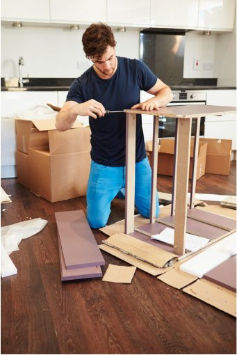
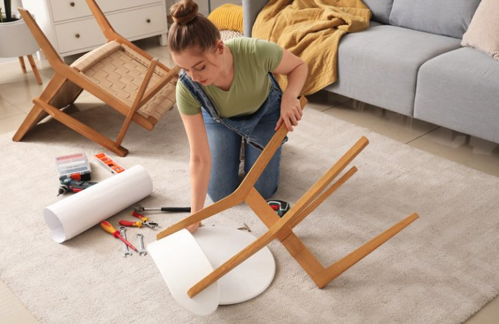
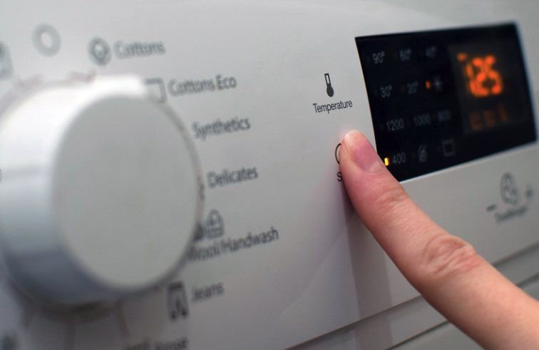
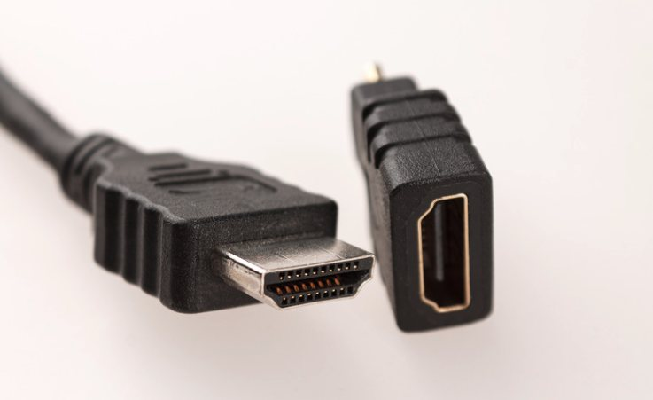
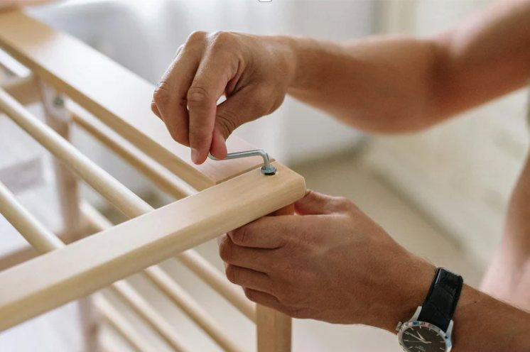
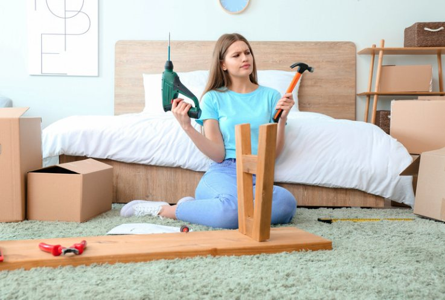

Furniture Assembly
“I lost the instructions. How do I finish building this?”
Send a photo or question. Fixly helps you troubleshoot, identify, assemble, repair, plan, build, install—or simply figure out what to do next.

You don’t need to know what the problem is called. Start with what you see.

“I lost the instructions. How do I finish building this?”
“My car is acting strange. What should I check first?”
“I can’t get online. Can you walk me through it?”
“What part is this, and can I replace it myself?”

“My washer won’t start. What should I check?”

“What cable is this, and what does it connect to?”

“Which tool do I need for this screw?”

“I want to build this. What do I need and where do I start?”
Missing the manual? Don’t own the exact tool? Not sure what a part is called? Show Fixly what you have. Nina can look for a safe alternative or tell you what you actually need.
A cable, connector, screw, warning, model number, or mystery part can be easier to show than explain.
Fixly helps you move from “I’m stuck” to a useful next step.
Show the space, part, device, damage, error, or project.
Clear next steps without dumping a giant checklist on you.
Fixly can suggest safe alternatives when you lack a tool or measurement.
Model numbers, manuals, parts, settings, and product-specific information.
Ask for human help or stop when professional help is the safer choice.
Tell Fixly what you’re trying to accomplish. Add a photo when seeing the problem is easier than describing it. Nina asks what she needs to know and guides you through the next practical step.
Fixly can help you understand what you’re looking at and what to do next. If a situation involves dangerous electrical work, gas, structural hazards, unsafe vehicle conditions, medical concerns, or an emergency, Fixly can tell you when to stop and get qualified help.
Take a photo. Send a text. Start where you are.
💬 Text Fixly Now →